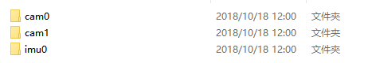
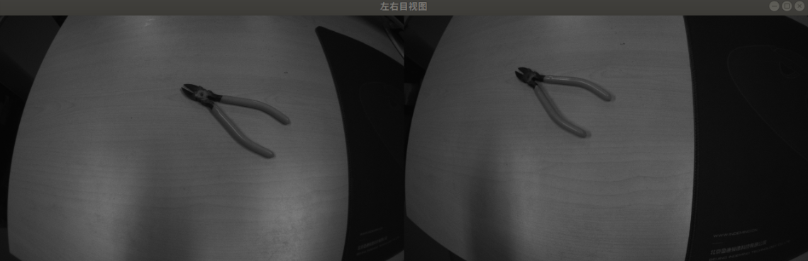

软件说明¶
主操作页¶


数据采集¶
点击 开始采集 按钮，未设置自定义文件存储位置的前提下，会在软件同级目录下生成以当前日期命名的文件夹，如果事先已经设置，则会在用户期望生成的文件目录下生成对应的文件夹。
软件提供 IMU数据、Camera数据单独存储，以及同时存储的功能，请根据需要选择需要存储的数据（需要注意的是：文件夹以分钟为单位创建，同一文件相同时刻会内，采集的数据会追加在当时的文件夹内。）。
警告
1分钟约3G的数据容量，届时请注意内存。

默认会在软件目录下生成

自定义会在需要生成的位置生成
一、 cam0文件夹存储 左目摄像头采集的图像信息 二、 cam1文件夹存储 右目摄像头采集的图像信息 三、 imu0文件夹存储 模组设备的IMU信息存储

图像显示¶
双目摄像头显示部分/Linux
